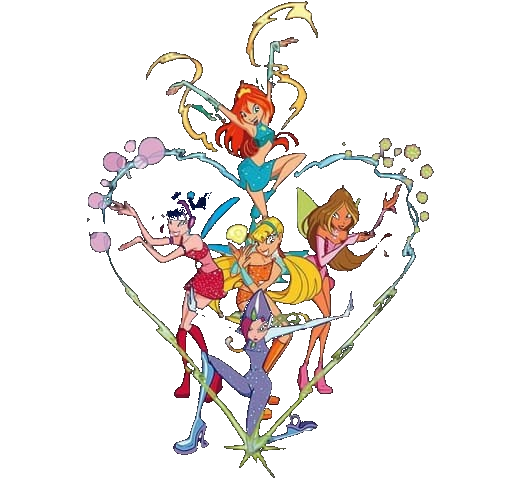

-
Bloom
.essa é a bloom, a protagonistas do desenho ela tem o poder de fogo, ela lança bolas de fogo muito poderosa.Ela pode ser um pouco teimosa e impulsiva, porém sempre fazendo as suas amigas ri
-
Stella
a Stella é a melhor amiga da bloom, assim como sua mãe ela consegue manipular a luz,ela também é fascinada por moda e sempre dá concelhos de como se vestir melhor para suas amigas.Ela tem uma personalidade muito forte e sempre anda alegre e otimista.
-
Aisha
a aisha tem o poder de manipular as águas,as vezes pode ser um pouco teimosa, porém sempre ajuda suas amigas quando precisar e sempre da conselhos muito bons. Ela adora dançar balé e é uma atleta muito talentosa e o seu hobby favorito é aprender novas línguas
-
Flora
a flora é uma das mais delicada e gentil.sempre calma e alegre.Flora tem o poder da natureza,ela consegue sentir e conversar com as plantas ela também consegue criar locução para cura.Ela é muito inteligente e esforçada
-
Tecna
a Tecna tem o poder de controlar qualquer eletrônico. Ela é extremamente inteligente e perfeccionista as vezes pode ser um pouco irritante por sempre querer ter razão,nas horas vagas ela gosta de ler e estudar
-
Musa
essa é a musa o poder dela é controlar a música(por isso sempre anda com seu fone) não só a música mas também as ondas sonoras, ela é capaz de manipular as dores e sentimentos dos seres vivos.Ela é uma ótima amiga, muito companheira, muito empatica com os outros é também considerada a rebelde do grupo
Mundo mágico das winx
O clube das winx, é um desenho de aventura e magia com 8 temporadas.Mostra a amizade entre 5 amigas com super poderes, cada uma com sua personalidade. E hoje vamos ver um pouco melhor cada uma.

assista o clube das winx
Aqui está algumas plataformas que você pode assistir o clube das winx
-
Netflix
porém não é o desenho original somente adaptação e uma série live eqton(que não é a mesma coisa do original) -
Apple TV (BR)
tem o desenho original completo -
Prime Vídeo
só tem a primeira temporada -
YouTube
tem no youtube,mas a quantidade não é uma das melhores e os episódios não tem uma ordem certa.